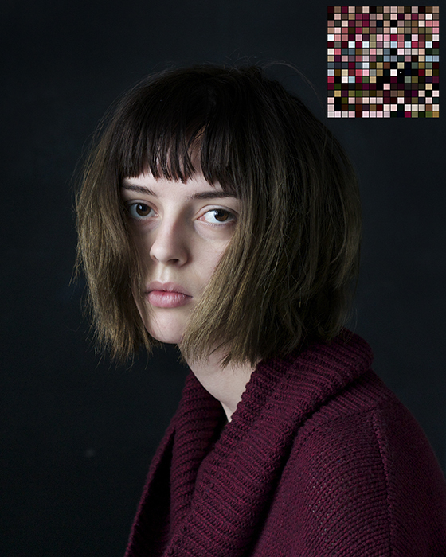

Dana Hauprich
about
selected works
contact
Dana Hauprich is a Baltimore based photographer working in fine art portraiture.
She will graduate from Towson University with a BFA in Photo Imaging in the Spring of 2016.
